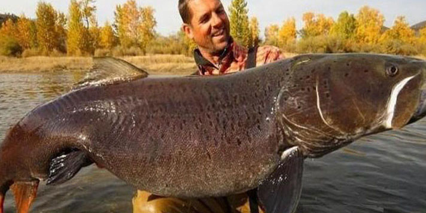

Cá Taimen
1.Giới thiệu
Cá taimen hay cá hồi Xibia (danh pháp hai phần: Hucho taimen) là một loài cá thuộc họ Cá hồi. Loài cá này sinh sống ở lưu vực sông Volga và sông Pechora về phía đông đến sông Yana và sông Amur ở phias nam. Ở phạm vi rộng hơn, phạm vi phân bố của chúng thuộc một phần hệ thống sông ngòi đổ ra biển Caspi và Bắc Băng Dương ở Nga và Mông Cổ. Đây là loài săn mồi với con mồi là các loài cá nhỏ hơn khác. Chúng sinh sống ở vùng nước chảy xiết và thỉnh thoảng được tìm thấy ở hồ, thường gần cửa của nhánh sông đổ vào hồ. Chúng không phải là loài di cư nhưng cũng di chuyển trong mùa sinh sản. Trung bình nó có khu vực sinh sống dài 23 km ở sông Eg-Uur ở Mông Cổ nhưng có cá thể có phạm vi 93 km.[1] Một số tác gia xem taimen là phân loài của Huchen, nghĩa là Hucho hucho taimen.
2.Nơi sống
chúng còn phân bố ở một phần hệ thống sông ngòi đổ ra biển Caspi và Bắc Băng Dương thuộc địa phận của Nga và Mông Cổ. Trong điều kiện tự nhiên, loài cá khổng lồ này có thể đạt chiều dài hơn 2m và nặng gần 100kg. Tuy nhiên, do nạn săn bắt quá nhiều, nên các cá thể “bự con” như vậy đã gần như không còn nữa.